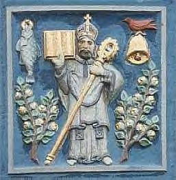

Sunday, January the 16th, 2005
back to: title, date or indexes
A couple of days ago we noted, as we do, the feast day of Saint Mungo. You ought to know that Saint Mungo's mother, Tenew, was thrown from the top of Traprain Law, a large hill outside Edinburgh, by her father Loth. Because she survived the plunge, it was thought she was a witch, so she was cast adrift in a coracle. Fetching up at Saint Serf's religious establishment on Culross, she gave birth to Mungo on the beach. This happened in the sixth century.

Mungo had a bell. He is a very important saint to robins. Saint Serf had a pet robin which was slaughtered by Mungo's jealous classmates, who hoped to pin the blame on him. But Mungo restored the bird to life. Later on, he swapped his pastoral stave with Saint Columba.
There is a special mass for Saint Mungo, dating from the thirteenth century, which has been printed by the Bollandists. The Bollandists are an association of ecclesiastical scholars engaged in editing the Acta Sanctorum, a great hagiographical collection begun during the first years of the seventeenth century, and continued to our own day. The work was conceived by Heribert Rosweyde (1569-1629). Under the title Fasti sanctorum quorum vitae in belgicis bibliothecis manuscriptiae, he gave in a little volume, published by the Plantin press at Antwerp, an alphabetical list of the names of the saints whose acts had been either found by him or called to his attention in old manuscript collections. This list filled fifty pages; the prefatory notice in which he indicates the character and arrangement of his work takes up fourteen. Finally, the work contains an appendix of twenty-six pages containing the unpublished acts of the passion of the holy Cilician martyrs, Tharsacus, Probus, and Andronicus, but not Mungo, who was not, in any case, a holy Cilician martyr.
Rosweyde planned supplementary volumes which would include the authors of the lives, the sufferings of the martyrs, the images of the saints, liturgical rites and customs mentioned in hagiographical documents, profane customs to which allusions had been made, questions of chronology, names of places encountered in these same documents, barbarous or obscure terms which might puzzle the readers, and tables showing the names of the saints whose lives had been published in the preceding volumes, the same names followed by notes indicating the place of the saint's birth, his station in life, his title to sanctity, the time and place in which he had lived, and the author of his life, the state of life of the various saints (religious, priest, virgin, widow, etc.), their position in the Church (apostle, bishop, abbot, etc.), the nomenclature of the saints according to the countries made illustrious by their birth, apostolate, sojourn, burial, nomenclature of the places in which they are honoured with a special cult, enumeration of the maladies for the cure of which they are especially invoked, the professions placed under their patronage, the proper names of persons and places encountered in the published lives, the passages of Holy Scripture there explained, points which may be of use in religious controversies, those applicable in the teaching of Christian doctrine, a general table of words and things in alphabetical order, “and others still,” added the author, “if anything of importance presents itself, of which our readers may give us an idea”.
This is such an important topic that we shall return to it at a later date. Meanwhile, you can commit to memory the little rhyme associated with Saint Mungo:
The tree that never grew, The bird that never flew, The fish that never swam, The bell that never rang.
Hooting Yard on the Air, February the 2nd, 2005 : “Scrofula and Penitence in the Middle Ages” (starts around 17:43)
Hooting Yard on the Air, January the 10th, 2007 : “Saint Mungo : Read and Learn” (starts around 00:11)